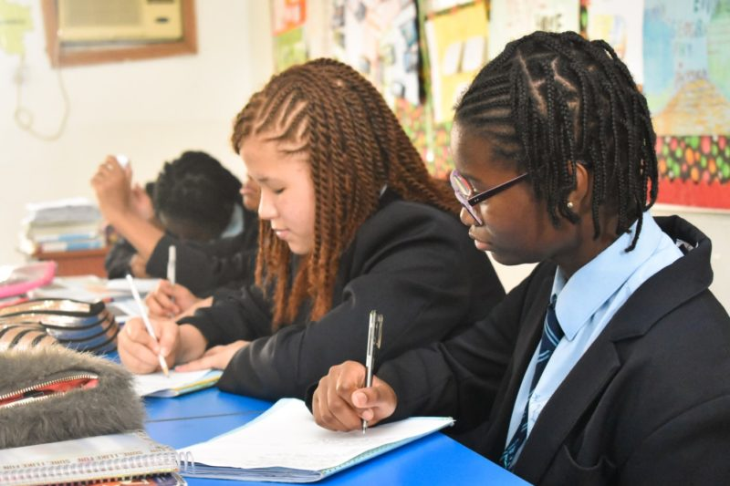

We are one of ibadan's best day and boarding school for boys and girls building world-class champions.
Hope that the website will give you an insight into the vibrant and exciting school we are
developing here in the heart of Ibadan.Rather like the city itself, Sow The Seed group of schools has
grown rapidly since it has established some twenty years ago by owners who are passionate about providing the very
best educatonal opportunities for the host and expat communities in the Nigeria capital. The school roll
numbers over 500 boys and girls. There is a long waiting list for many classes. We aspire to become the best
international Creche,Primary,and Secondary school in Nigeria and then to rank amongst the top schools worldwide.
We provide outstanding opportunities that develop every aspect of our students' interest and ability. Educating
children is our mission and YOU the parents are our customers, our programs are designed to offer parnts flexibility
while maximizing the benefit to our students. Sow The Seed school is established in the year 1969, that seeks
after not only academic excellence but also morally sound students with integrity and nobility as proper tools for
the development of a complete personality in the society.
WHAT SETS US APART
Welcoming Environment
We strongly believe that learning in a calm and soothing space allows children to explore their environment
free
from over stimulating. Our decor is geared towards soft, neutral colors to promote
a relaxing aesthetic and
prevent the learning areas from appearing cluttered.
with our society being so fast-paced, having an environment
that is
not overwhelming facilitates children to learn and grow
at their own pace.
Teaching & Learning
The structure of our classes is very dynamic and is tailored to
satisfy the specific needs of the students
at different
points in time
Guidance & Counselling
We have well-trained counsellors who apply discretion in
determining when actions must be
taken especially regarding
parsonal issues.
Learning Enhancements
There is a library and a computer room in each facility that allows
students to study and research under the
guidance
of their teachers.
Parent-Teacher Communication
This is an important part of learning. We inform parents about
their child's progress through a
regular report
and scheduled invite.
Conducive Hostel
Our college has a hostel that offers a home away from home experience.
Our hostel staff are always avaiable to
watch over and
take care of all needs.
Extracurricular Activities
From sports to excurtions, vacational classes, coding clases, fashion,
wire works and more, our student
always turns
out well-grounded.